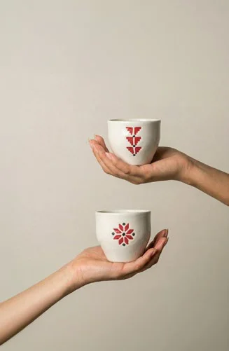

تواصل
اكتب لنا
اكتب لنا
نرد عليك
أسرع طريق إلى دار رسالة على واتساب. اسألنا عن قطعة أو مقاس أو طلب، أو عن هدايا مؤسستك.
رسالة جاهزة على واتساب
اختر الموضوع واكتب سؤالك، ونفتح لك واتساب والرسالة مكتوبة.
جهزنا رسالتكأرسلها من واتساب لتصل إلى دار. إن لم يفتح واتساب، افتحه من هنا.
قبل أن تكتب
ربما تجد الجواب هنا

زورونا
Bahçelievler, İstanbul
الدار مفتوحة لكم
تعالوا المسوا القطع بأيديكم، واسمعوا حكاية كل نقشة. مركز دار في حي Bahçelievler في إسطنبول.
Altın Sk. No:11/ABahçelievler, İstanbul
مواعيد الزيارة نؤكدها معكم على واتساب قبل الحضور.